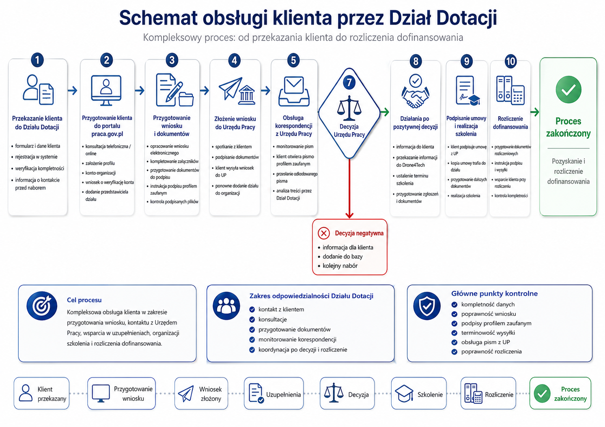

Drugi warsztat, przeprowadzony na żywo na makiecie v2 (2 h 16 min). Wykonawca przechodził ekran po ekranie, sprawdzając, co jest zaopiekowane, co wymaga zmiany i co urodziło się od pierwszego warsztatu. Warsztat przyniósł kilka odwróceń wcześniejszych decyzji. Poniżej najpierw osobna sekcja konfliktów, potem nowe decyzje, proces i szczegóły.
To jest osobna sekcja z wszystkim, co zmienia lub unieważnia wcześniejsze ustalenia.
| Nowe ustalenie (04.09.2026) | Koliduje z | Rozstrzygnięcie |
|---|---|---|
| Moduł zadań i powiadomień wraca do systemu | D-118 (zadania wykluczone, do Projectly) | Odwrócone D-140 |
| "Przyznano" edytowalne ręcznie z przywracaniem reguły | D-58, pytanie P-30 | Odwrócone D-135 |
| "Koszt całkowity z dopłatą" ręczny, "koszt całkowity" wyliczany | D-64 (odwrotnie) | Odwrócony kierunek D-134 |
| Progi dofinansowania konfigurowalne i datowane | D-59 (sztywne 90/10, 70/30) | Skorygowane D-131 |
| Wielkość przedsiębiorstwa edytowalna per wniosek (kryterium obrotu) | D-68 (auto z liczby zatrudnionych) | Skorygowane D-132 |
| Indywidualna prowizja: procent LUB kwota | D-21 (zawsze procentowo) | Skorygowane D-136 |
| Osobne mini-bazy per instytucja pod spodem | Wymagania zbiorczych widoków, blokada P-25 | Napięcie otwarte D-143, P-56 |
| Pytanie | Rozstrzygnięcie 04.09.2026 |
|---|---|
| P-03 Czy nadpisana stawka wlicza się do progów | Tak, wlicza się do puli progowej D-137 |
| P-10 Czy zostaje kalendarz terminów | Tak, kalendarz per instytucja D-142 |
| P-30 Czy "Przyznano" nieedytowalne | Nie, ma być edytowalne D-135 |
| P-41 Ten sam klient u dwóch instytucji | Tak, wiele znaczników, separacja widoku D-144 |
| ID | Decyzja | Typ |
|---|---|---|
| D-125 | Rola wynika z konta zalogowanego (panel logowania); przełącznik ról w makiecie tylko demonstracyjny | uszczegółowia D-02, D-36 |
| D-126 | Administrator instytucji zarządza własnymi pracownikami; admin LDIT zachowuje usuwanie, blokowanie i filtrowanie kont | rozszerza D-72 |
| D-127 | Zakładka "Dofinansowania" statyczna + jawna "Wszystkie instytucje"; lista rozwijana | aktualizuje D-112 |
| D-128 | Dwie tabele: Baza danych (klient = 1 wiersz) i Wnioski (od etapu 3, powielanie klienta) | NOWE |
| D-129 | Osobne zakładki roczne; brak migracji danych historycznych; podsumowania jako wsad | aktualizuje D-24 |
| D-130 | Priorytet w Bazie = ostatni dzień naboru; flaga zainteresowania; edycja inline dat | rozszerza D-90 |
| D-131 | Progi dofinansowania per wielkość konfigurowalne i wersjonowane datą | koryguje D-59 |
| D-132 | Wielkość przedsiębiorstwa edytowalna per wniosek (kryterium obrotu >2 mln EUR) | koryguje D-68 |
| D-133 | Dane klienta i kontaktowe edytowalne per wniosek; osobna zakładka danych stałych | rozszerza D-53, D-54 |
| D-134 | "Koszt całkowity z dopłatą" ręczny, "koszt całkowity" wyliczany | odwraca D-64 |
| D-135 | "Przyznano" edytowalne ręcznie z przywracaniem reguły | odwraca D-58, rozstrzyga P-30 |
| D-136 | Indywidualne nadpisanie prowizji: procent albo kwota | koryguje D-21 |
| D-137 | Indywidualna stawka wlicza się do puli progowej | rozstrzyga P-03 |
| D-138 | Nadpisanie prowizji z karty wniosku; Administracja = podsumowanie + dashboard miesięczny i narastająco | potwierdza D-93 |
| D-139 | Numer faktury przy wniosku, import i lista faktur | uszczegółowia D-37, D-38 |
| D-140 | Moduł zadań i powiadomień wraca do systemu (ręczne + automatyczne, alerty, plan dnia) | odwraca D-118 |
| D-141 | Statystyki per instytucja i zbiorczo na Administracji; system nagród | rozszerza statystyki |
| D-142 | Kalendarz terminów per instytucja w systemie; termin przypisany do wniosku | rozstrzyga P-10 |
| D-143 | Kierunek: osobne mini-bazy per instytucja; framework open source z modułem uprawnień | dotyczy P-25 |
| D-144 | Jeden klient może być przypisany do wielu instytucji (znaczniki) | rozstrzyga P-41 |
| D-145 | Przebieg wniosku z logów zmian statusu; zmiana przyciskiem "przejdź do następnego etapu" + komentarz | NOWE |
| D-146 | Etapy procesu wg Etapy_procesu.png; wejście do tabeli Wnioski od etapu 3 | NOWE |
| D-147 | Formularz preferencyjnie Google Forms, zaczytywany z eksportu; import starej bazy przez LDIT | uszczegółowia D-66, D-70 |
Klient dostarczył diagram procesu. Ma trafić do dokumentacji, a docelowo makieta ma być budowana na jego podstawie D-146.

| Etap | Nazwa | Co się dzieje |
|---|---|---|
| 1 | Przekazanie klienta | IS/handlowiec przekazuje klienta przez formularz; Dział Dotacji weryfikuje dane |
| 2 | Akceptacja formularza | Bramka anty-spam, rejestracja w systemie (folder + baza klientów) |
| 3 | Przygotowanie wniosku i dokumentów | Profil praca.gov.pl, weryfikacja konta, dodanie przedstawiciela, wniosek elektroniczny, załączniki, dokumenty do podpisu. Od tego etapu klient wchodzi do tabeli Wnioski |
| 4 | Złożenie wniosku | Wniosek złożony w PUP |
| 5 | Oczekiwanie na decyzję | Wniosek w rozpatrywaniu |
| 6 | Decyzja urzędu | Pozytywna lub negatywna. Negatywna: klient zostaje w bazie, czeka na kolejny nabór |
| 7 | Ustalenie terminu | Model A (LDIT z kalendarza IS) lub B (IS ustala). Powiadomienia do IS i do LDIT |
| 8 | Realizacja szkolenia | Szkolenie się odbywa |
| 9 | Rozliczenie | Dokumenty rozliczeniowe (zadanie auto z daty ostatniego dnia), dane do faktury, certyfikaty |
| 10 | Proces zakończony | Dofinansowanie rozliczone |
Zakładka "Dofinansowania" + jawna pozycja "Wszystkie instytucje" D-127. Po wejściu w instytucję dwie tabele: Baza danych (po lewej, wszyscy klienci, klient = 1 wiersz, wnioski rozwijane) i Wnioski (po prawej, od etapu 3) D-128.
Baza klientów zawiera wszystkich, których nigdy się nie usuwa. Priorytet: ostatni dzień naboru D-130. Flaga zainteresowania kolejnym naborem. Osobne zakładki roczne, bez migracji danych D-129.
Progi dofinansowania per wielkość konfigurowalne i datowane D-131. Wielkość edytowalna per wniosek, z uwzględnieniem obrotu D-132. Odwrócenie: koszt całkowity z dopłatą ręczny, koszt całkowity wyliczany D-134. "Przyznano" edytowalne z przywracaniem reguły D-135. Dane klienta i kontaktowe per wniosek D-133.
Nadpisanie z karty wniosku; Administracja jako podsumowanie po instytucjach + dashboard miesięczny i narastająco D-138. Indywidualne nadpisanie jako procent albo kwota D-136. Indywidualna stawka wlicza się do puli progowej D-137. Prowizja widoczna tylko dla administratora. Silnik: Silnik prowizji.
Moduł zadań wraca D-140. Zadania ręczne (per wniosek, plan dnia) i automatyczne (przypięte do statusów i dat, np. przygotowanie rozliczenia z daty ostatniego dnia szkolenia). Powiadomienia i alerty jako osobny wątek: ręczne alerty na datę, automatyczne, usuwalne. Panel z lewej, poranna lista priorytetów, licznik wniosków oczekujących na akceptację. Do przemyślenia: 1 czy 2 moduły P-55.
Terminy: kalendarz per instytucja w systemie, termin przypisany do wniosku, LDIT ma wgląd we wszystkie; kalendarz + tabela + lista uczestników D-142.
Statystyki: ilościowe i kwotowe per instytucja i zbiorczo na Administracji; system nagród dla instytucji D-141.
Bezpieczeństwo: skłonność ku osobnym mini-bazom per instytucja pod spodem D-143 (napięcie z blokadą P-25, nowy wątek P-56). Jeden klient może być u wielu instytucji D-144.
Formularz i przebieg: preferencyjnie Google Forms, zaczytywany z eksportu; LDIT może dodawać klientów i importować starą bazę D-147. Przebieg wniosku budowany z logów zmian statusu D-145.
Drobne wizualne: usunąć zbędne informacje z widoków, kanał ogłoszeń za obszerny, filtry w osobnych oknach, listy bez paginacji.
| ID | Pytanie |
|---|---|
| P-55 | Zadania kontra powiadomienia: jeden moduł czy dwa |
| P-56 | Osobne mini-bazy per instytucja kontra zbiorcze widoki (powiązane z P-25) |
| P-57 | Które zadania są automatyczne, a które ręczne |
| P-58 | Zakres i forma bota ("Makieta + Bot") |
Warsztaty LDIT - 20260904/. Powiązane:
Rejestr decyzji,
Pytania otwarte.